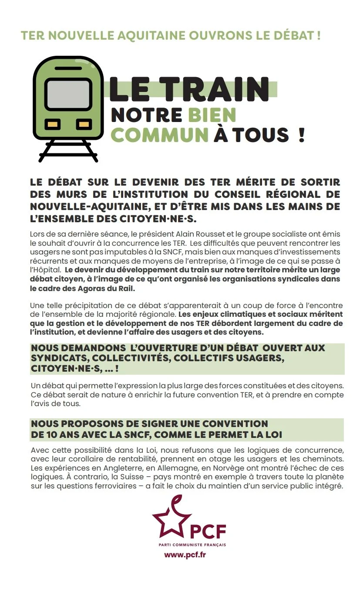

Publication d’archives
TER NOUVELLE AQUITAINE, OUVRONS LE DÉBAT !
Date indiquée par Facebook · 9 novembre 2022
Texte conservé avec la publication
Contexte du dossier
Le 19 octobre, la fédération relaie la réaction des élus communistes régionaux aux prémices de l’ouverture des TER à la concurrence dans le débat budgétaire. Le 9 novembre, leur proposition devient précise : une convention de dix ans avec la SNCF. Le 8 décembre, le PCF 79 réaffirme son soutien à son renouvellement en Nouvelle-Aquitaine. Ces publications attestent une campagne et une proposition, sans établir leur adoption. Elles posent un choix de fond pour les déplacements quotidiens : construire la continuité d’un service public ferroviaire plutôt qu’organiser la séparation des lignes et des responsabilités entre opérateurs.

Sources
Archive rouge · export Facebook · AR-0002-FB-01818
À lire aussi · TER en Nouvelle-Aquitaine. Pour une convention renouvelée avec la SNCF